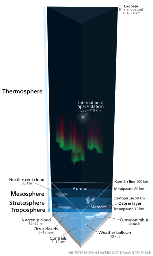

OuterSpace
Outerspace or deep space, or just space, is the void that exists between celestial bodies, including Earth.It is not completely empty, but consists of a hard vacuum containing a low density of particles, predominantly a plasma of hydrogen and helium as
well as electromagnetic radiation, magnetic fields, neutrinos, dust and cosmic rays. The baseline temperature, as set by the background radiation from the Big Bang, is 2.7 kelvins (K) (−270.45 °C; −454.81 °F).Plasma with a number density
of less than one hydrogen atom per cubic metre and a temperature of millions of kelvins in the space between galaxies accounts for most of the baryonic (ordinary) matter in outer space.
Discovery
In 350 BCE, Greek philosopher Aristotle suggested that nature abhors a vacuum, a principle that became known as the horror vacui. This concept built upon a 5th-century BCE ontological argument by the Greek philosopher Parmenides, who denied the possible
existence of a void in space.Based on this idea that a vacuum could not exist, in the West it was widely held for many centuries that space could not be empty. As late as the 17th century, the French philosopher René Descartes
argued that the entirety of space must be filled.